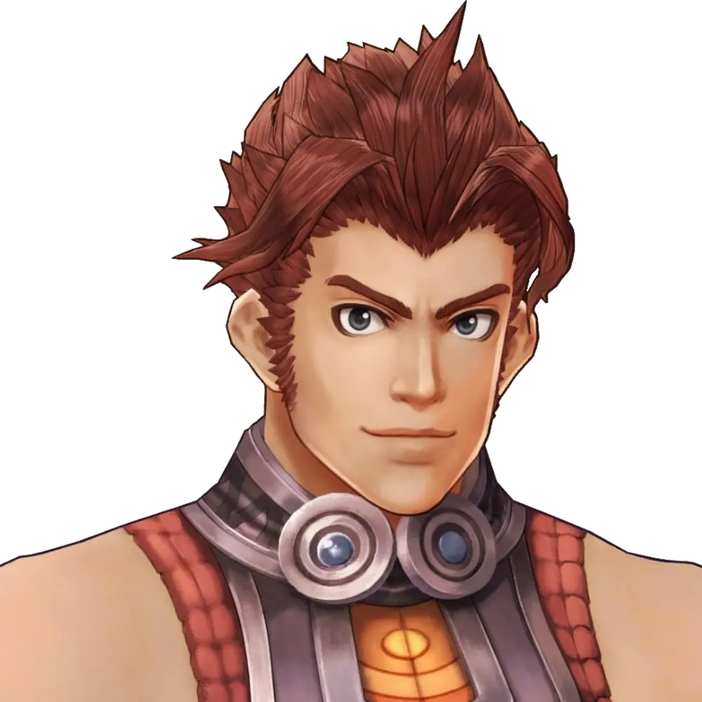

Reyn

Reyn is one of Shulk's pals and one of the seven playable characters in Xenoblade Chronicles. After Shulk, he is the second character who gets introduced in the game. Despite being a part of the Defense Force of Colony 9, he frequently appears alongside Shulk and Fiora.
Early in Chapter 1, Reyn becomes playable. His weapon of choice is an huge Gunlance that can be used as a shield, a gun, or a lance.
Quotes
"Now it's Reyn time!"
---
"Man, wha' a buncha jokas!"
---
"You can't have a rainbow without Reyn, baby!"